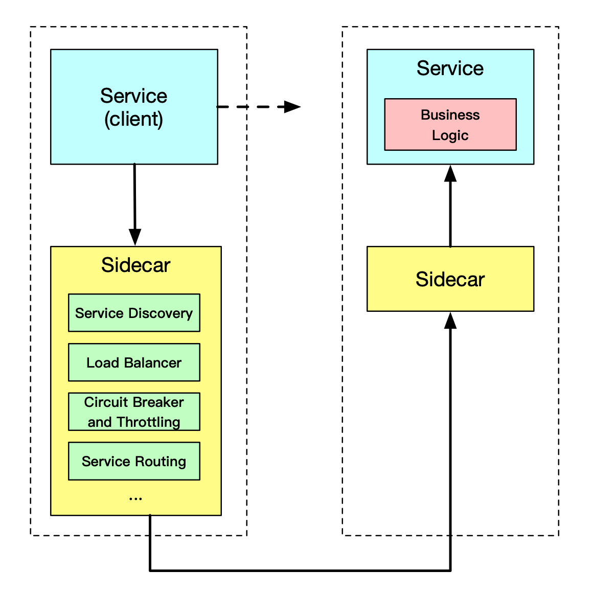
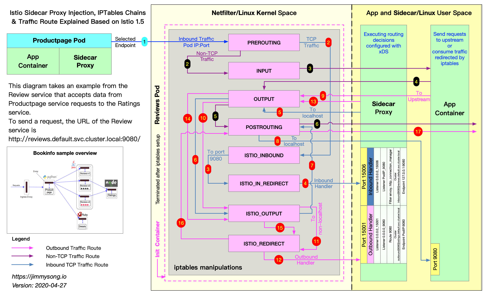

Based on Istio version 1.5.1, this article will present the following.
A year ago, I have written about understanding Envoy proxy Sidecar injection and traffic hijacking in Istio Service Mesh which was based on Istio version 1.1. The biggest changes in the sidecar injection and traffic hijacking link between Istio 1.5 and Istio 1.1 are:
Note: Portions of this article are included in the Istio Handbook from the ServiceMesher community.
Read the Chinese version: 阅读中文版
Dividing the functionality of an application into separate processes running in the same minimal scheduling unit (e.g. Pod in Kubernetes) can be considered sidecar mode. As shown in the figure below, Sidecar pattern allows you to add more features next to your application without additional third-party component configuration or modifications to the application code.

The Sidecar application is loosely coupled to the main application. It can shield the differences of different programming languages and unify the functions of microservices such as observability, monitoring, logging, configuration, circuit breaker, etc.
When deploying a service grid using SIDECAR mode, there is no need to run an agent on the node, but multiple copies of the same SIDECAR will run in the cluster. In the sidecar deployment method, a companion container (such as Envoy or MOSN) is deployed next to each application’s container, which is called a sidecar container. the sidecar takes over all traffic in and out of the application container. In Kubernetes' Pod, a sidecar container is injected next to the original application container, and the two containers share storage, networking, and other resources.
Due to its unique deployment architecture, the sidecar model offers the following advantages.
The following two sidecar injection methods are available in Istio.
istioctl.Whether injected manually or automatically, SIDECAR’s injection process follows the following steps.
The sidecar can be injected manually using the following command.
istioctl kube-inject -f ${YAML_FILE} | kuebectl apply -f -
This command is injected using Istio’s built-in sidecar configuration, see the Istio official website for details on how to use Istio below.
When the injection is complete you will see that Istio has injected initContainer and sidecar proxy related configurations into the original pod template.
The Init container is a dedicated container that runs before the application container is launched and is used to contain some utilities or installation scripts that do not exist in the application image.
Multiple Init containers can be specified in a Pod, and if more than one is specified, the Init containers will run sequentially. The next Init container can only be run if the previous Init container must run successfully. Kubernetes only initializes the Pod and runs the application container when all the Init containers have been run.
The Init container uses Linux Namespace, so it has a different view of the file system than the application container. As a result, they can have access to Secret in a way that application containers cannot.
During Pod startup, the Init container starts sequentially after the network and data volumes are initialized. Each container must be successfully exited before the next container can be started. If exiting due to a error will result in a container startup failure, it will retry according to the policy specified in the Pod’s restartPolicy. However, if the Pod’s restartPolicy is set to Always, the restartPolicy is used when the Init container failed.
The Pod will not become Ready until all Init containers are successful. The ports of the Init containers will not be aggregated in the Service. The Pod that is being initialized is in the Pending state, but should set the Initializing state to true. The Init container will automatically terminate once it is run.
For a detailed YAML configuration for bookinfo applications, see bookinfo.yaml for the official Istio YAML of productpage in bookinfo sample.
The following will be explained in the following terms.
apiVersion: apps/v1
kind: Deployment
metadata:
name: productpage-v1
labels:
app: productpage
version: v1
spec:
replicas: 1
selector:
matchLabels:
app: productpage
version: v1
template:
metadata:
labels:
app: productpage
version: v1
spec:
serviceAccountName: bookinfo-productpage
containers:
- name: productpage
image: docker.io/istio/examples-bookinfo-productpage-v1:1.15.0
imagePullPolicy: IfNotPresent
ports:
- containerPort: 9080
volumeMounts:
- name: tmp
mountPath: /tmp
volumes:
- name: tmp
emptyDir: {}
Let’s see the productpage container’s Dockerfile。
FROM python:3.7.4-slim
COPY requirements.txt ./
RUN pip install --no-cache-dir -r requirements.txt
COPY test-requirements.txt ./
RUN pip install --no-cache-dir -r test-requirements.txt
COPY productpage.py /opt/microservices/
COPY tests/unit/* /opt/microservices/
COPY templates /opt/microservices/templates
COPY static /opt/microservices/static
COPY requirements.txt /opt/microservices/
ARG flood_factor
ENV FLOOD_FACTOR ${flood_factor:-0}
EXPOSE 9080
WORKDIR /opt/microservices
RUN python -m unittest discover
USER 1
CMD ["python", "productpage.py", "9080"]
We see that ENTRYPOINT is not configured in Dockerfile, so CMD’s configuration python productpage.py 9080 will be the default ENTRYPOINT, keep that in mind and look at the configuration after the sidecar injection.
$ istioctl kube-inject -f samples/bookinfo/platform/kube/bookinfo.yaml
We intercept only a portion of the YAML configuration that is part of the Deployment configuration associated with productpage.
containers:
- image: docker.io/istio/examples-bookinfo-productpage-v1:1.15.0 # application image
name: productpage
ports:
- containerPort: 9080
- args:
- proxy
- sidecar
- --domain
- $(POD_NAMESPACE).svc.cluster.local
- --configPath
- /etc/istio/proxy
- --binaryPath
- /usr/local/bin/envoy
- --serviceCluster
- productpage.$(POD_NAMESPACE)
- --drainDuration
- 45s
- --parentShutdownDuration
- 1m0s
- --discoveryAddress
- istiod.istio-system.svc:15012
- --zipkinAddress
- zipkin.istio-system:9411
- --proxyLogLevel=warning
- --proxyComponentLogLevel=misc:error
- --connectTimeout
- 10s
- --proxyAdminPort
- "15000"
- --concurrency
- "2"
- --controlPlaneAuthPolicy
- NONE
- --dnsRefreshRate
- 300s
- --statusPort
- "15020"
- --trust-domain=cluster.local
- --controlPlaneBootstrap=false
image: docker.io/istio/proxyv2:1.5.1 # sidecar proxy
name: istio-proxy
ports:
- containerPort: 15090
name: http-envoy-prom
protocol: TCP
initContainers:
- command:
- istio-iptables
- -p
- "15001"
- -z
- "15006"
- -u
- "1337"
- -m
- REDIRECT
- -i
- '*'
- -x
- ""
- -b
- '*'
- -d
- 15090,15020
image: docker.io/istio/proxyv2:1.5.1 # init container
name: istio-init
Istio’s configuration for application Pod injection mainly includes:
istio-init: for setting iptables port forwarding in podistio-proxy: running a sidecar proxy, such as Envoy or MOSNThe two containers will be parsed separately.
The Init container that Istio injects into the pod is named istio-init, and we see in the YAML file above after Istio’s injection is complete that the init command for this container is.
istio-iptables -p 15001 -z 15006 -u 1337 -m REDIRECT -i '*' -x "" -b '*' -d 15090,15020
Let’s check the container’s Dockerfile again to see how ENTRYPOINT determines what commands are executed at startup.
# ommit
# The pilot-agent will bootstrap Envoy.
ENTRYPOINT ["/usr/local/bin/pilot-agent"]
We see that the entrypoint of the istio-init container is the /usr/local/bin/istio-iptables command line, and the location of the code for this command line tool is in the tools/istio-iptables directory of the Istio source code repository.
Note: In Istio version 1.1, the isito-iptables.sh command line is still used to operate IPtables.
The Init container’s entrypoint is the istio-iptables command line, which is used as follows.
Usage:
istio-iptables [flags]
Flags:
-n, --dry-run Do not call any external dependencies like iptables
-p, --envoy-port string Specify the envoy port to which redirect all TCP traffic (default $ENVOY_PORT = 15001)
-h, --help help for istio-iptables
-z, --inbound-capture-port string Port to which all inbound TCP traffic to the pod/VM should be redirected to (default $INBOUND_CAPTURE_PORT = 15006)
--iptables-probe-port string set listen port for failure detection (default "15002")
-m, --istio-inbound-interception-mode string The mode used to redirect inbound connections to Envoy, either "REDIRECT" or "TPROXY"
-b, --istio-inbound-ports string Comma separated list of inbound ports for which traffic is to be redirected to Envoy (optional). The wildcard character "*" can be used to configure redirection for all ports. An empty list will disable
-t, --istio-inbound-tproxy-mark string
-r, --istio-inbound-tproxy-route-table string
-d, --istio-local-exclude-ports string Comma separated list of inbound ports to be excluded from redirection to Envoy (optional). Only applies when all inbound traffic (i.e. "*") is being redirected (default to $ISTIO_LOCAL_EXCLUDE_PORTS)
-o, --istio-local-outbound-ports-exclude string Comma separated list of outbound ports to be excluded from redirection to Envoy
-i, --istio-service-cidr string Comma separated list of IP ranges in CIDR form to redirect to envoy (optional). The wildcard character "*" can be used to redirect all outbound traffic. An empty list will disable all outbound
-x, --istio-service-exclude-cidr string Comma separated list of IP ranges in CIDR form to be excluded from redirection. Only applies when all outbound traffic (i.e. "*") is being redirected (default to $ISTIO_SERVICE_EXCLUDE_CIDR)
-k, --kube-virt-interfaces string Comma separated list of virtual interfaces whose inbound traffic (from VM) will be treated as outbound
--probe-timeout duration failure detection timeout (default 5s)
-g, --proxy-gid string Specify the GID of the user for which the redirection is not applied. (same default value as -u param)
-u, --proxy-uid string Specify the UID of the user for which the redirection is not applied. Typically, this is the UID of the proxy container
-f, --restore-format Print iptables rules in iptables-restore interpretable format (default true)
--run-validation Validate iptables
--skip-rule-apply Skip iptables apply
The above incoming parameters are reassembled into iptables rules. For more information on how to use this command, visit tools/istio-iptables/pkg/cmd/root.go.
The significance of the container’s existence is that it allows the sidecar agent to intercept all inbound and outbound traffic to the pod, redirect all inbound traffic to port 15006 (sidecar) except port 15090 (used by Mixer) and port 15092 (Ingress Gateway), and then intercept outbound traffic from the application container which is processed by sidecar (listening through port 15001) and then outbound. See the official Istio documentation for port usage in Istio.
Command analysis
Here is the purpose of this start-up command.
Because the Init container is automatically terminated after initialization, since we cannot log into the container to view the iptables information, but the Init container initialization results are retained in the application container and sidecar container.
In order to view the iptables configuration, we need to nsenter the sidecar container using the root user to view it, because kubectl cannot use privileged mode to remotely manipulate the docker container, so we need to log on the host where the productpage pod is located.
If you use Kubernetes deployed by minikube, you can log directly into the minikube’s virtual machine and switch to root. View the iptables configuration that lists all the rules for the NAT (Network Address Translation) table because the mode for redirecting inbound traffic to the sidecar is REDIRECT in the parameters passed to the istio-iptables when the Init container is selected for startup, so there will only be NAT table specifications in the iptables and mangle table configurations if TPROXY is selected. See the iptables command for detailed usage.
We only look at the iptables rules related to productpage below.
# login to minikube, change user to root
$ minikube ssh
$ sudo -i
# See the processes in the productpage pod's istio-proxy container
$ docker top `docker ps|grep "istio-proxy_productpage"|cut -d " " -f1`
UID PID PPID C STIME TTY TIME CMD
1337 10576 10517 0 08:09 ? 00:00:07 /usr/local/bin/pilot-agent proxy sidecar --domain default.svc.cluster.local --configPath /etc/istio/proxy --binaryPath /usr/local/bin/envoy --serviceCluster productpage.default --drainDuration 45s --parentShutdownDuration 1m0s --discoveryAddress istiod.istio-system.svc:15012 --zipkinAddress zipkin.istio-system:9411 --proxyLogLevel=warning --proxyComponentLogLevel=misc:error --connectTimeout 10s --proxyAdminPort 15000 --concurrency 2 --controlPlaneAuthPolicy NONE --dnsRefreshRate 300s --statusPort 15020 --trust-domain=cluster.local --controlPlaneBootstrap=false
1337 10660 10576 0 08:09 ? 00:00:33 /usr/local/bin/envoy -c /etc/istio/proxy/envoy-rev0.json --restart-epoch 0 --drain-time-s 45 --parent-shutdown-time-s 60 --service-cluster productpage.default --service-node sidecar~172.17.0.16~productpage-v1-7f44c4d57c-ksf9b.default~default.svc.cluster.local --max-obj-name-len 189 --local-address-ip-version v4 --log-format [Envoy (Epoch 0)] [%Y-%m-%d %T.%e][%t][%l][%n] %v -l warning --component-log-level misc:error --concurrency 2
# Enter the nsenter into the namespace of the sidecar container (any of the above is ok)
$ nsenter -n --target 10660
View the process’s iptables rule chain under its namespace.
# View the details of the rule configuration in the NAT table.
$ iptables -t nat -L -v
# PREROUTING chain: Used for Destination Address Translation (DNAT) to jump all incoming TCP traffic to the ISTIO_INBOUND chain.
Chain PREROUTING (policy ACCEPT 2701 packets, 162K bytes)
pkts bytes target prot opt in out source destination
2701 162K ISTIO_INBOUND tcp -- any any anywhere anywhere
# INPUT chain: Processes incoming packets and non-TCP traffic will continue on the OUTPUT chain.
Chain INPUT (policy ACCEPT 2701 packets, 162K bytes)
pkts bytes target prot opt in out source destination
# OUTPUT chain: jumps all outbound packets to the ISTIO_OUTPUT chain.
Chain OUTPUT (policy ACCEPT 79 packets, 6761 bytes)
pkts bytes target prot opt in out source destination
15 900 ISTIO_OUTPUT tcp -- any any anywhere anywhere
# POSTROUTING CHAIN: All packets must first enter the POSTROUTING chain when they leave the network card, and the kernel determines whether they need to be forwarded out according to the packet destination.
Chain POSTROUTING (policy ACCEPT 79 packets, 6761 bytes)
pkts bytes target prot opt in out source destination
# ISTIO_INBOUND CHAIN: Redirects all inbound traffic to the ISTIO_IN_REDIRECT chain, except for traffic destined for ports 15090 (used by mixer) and 15020 (used by Ingress gateway for Pilot health checks), and traffic sent to these two ports will return to the call point of the iptables rule chain, the successor POSTROUTING to the PREROUTING chain.
Chain ISTIO_INBOUND (1 references)
pkts bytes target prot opt in out source destination
0 0 RETURN tcp -- any any anywhere anywhere tcp dpt:ssh
2 120 RETURN tcp -- any any anywhere anywhere tcp dpt:15090
2699 162K RETURN tcp -- any any anywhere anywhere tcp dpt:15020
0 0 ISTIO_IN_REDIRECT tcp -- any any anywhere anywhere
# ISTIO_IN_REDIRECT chain: jumps all inbound traffic to the local 15006 port, thus successfully blocking traffic to the sidecar.
Chain ISTIO_IN_REDIRECT (3 references)
pkts bytes target prot opt in out source destination
0 0 REDIRECT tcp -- any any anywhere anywhere redir ports 15006
# ISTIO_OUTPUT chain: select the outbound traffic that needs to be redirected to Envoy (i.e., local), and all non-localhost traffic is forwarded to ISTIO_REDIRECT. to avoid infinite loops in the pod, all traffic to the istio-proxy userspace is returned to the next rule in its call point, which in this case is the OUTPUT chain, because jumping out of the ISTIO_OUTPUT rule leads to the next chain POSTROUTING. if the destination is non-localhost, jump to ISTIO_REDIRECT; if the traffic is from the istio-proxy userspace, jump out of the chain, return its call chain to continue the next rule (the next rule of OUTPUT, without processing the traffic); all non-istio-proxy userspace traffic whose destination is localhost, jump to ISTIO_REDIRECT.
Chain ISTIO_OUTPUT (1 references)
pkts bytes target prot opt in out source destination
0 0 RETURN all -- any lo 127.0.0.6 anywhere
0 0 ISTIO_IN_REDIRECT all -- any lo anywhere !localhost owner UID match 1337
0 0 RETURN all -- any lo anywhere anywhere ! owner UID match 1337
15 900 RETURN all -- any any anywhere anywhere owner UID match 1337
0 0 ISTIO_IN_REDIRECT all -- any lo anywhere !localhost owner GID match 1337
0 0 RETURN all -- any lo anywhere anywhere ! owner GID match 1337
0 0 RETURN all -- any any anywhere anywhere owner GID match 1337
0 0 RETURN all -- any any anywhere localhost
0 0 ISTIO_REDIRECT all -- any any anywhere anywhere
# ISTIO_REDIRECT chain: redirects all traffic to Sidecar (i.e. local) port 15001.
Chain ISTIO_REDIRECT (1 references)
pkts bytes target prot opt in out source destination
0 0 REDIRECT tcp -- any any anywhere anywhere redir ports 15001
The figure below shows how the productpage service requests access to http://reviews.default.svc.cluster.local:9080/ and how the sidecar proxy inside the reviews service does traffic blocking and routing forwarding when traffic goes inside the reviews service.

At the beginning of the first step, the sidecar in the productpage pod has selected a pod of the reviews service to be requested via EDS, knows its IP address, and sends a TCP connection request.
There are three versions of the reviews service, each with an instance, and the sidecar work steps in the three versions are similar, as illustrated below only by the sidecar traffic forwarding step in one of the Pods.
iptables is a management tool for netfilter, the firewall software in the Linux kernel. netfilter is located in the user space and is part of netfilter. netfilter is located in the kernel space and has not only network address conversion, but also packet content modification and packet filtering firewall functions.
Before learning about iptables for Init container initialization, let’s go over iptables and rule configuration.
The following figure shows the iptables call chain.

The iptables version used in the Init container is v1.6.0 and contains 5 tables.
Note: In this example, only the NAT table is used.
The chain types in the different tables are as follows.
| Rule name | raw | filter | nat | mangle | security |
|---|---|---|---|---|---|
| PREROUTING | ✓ | ✓ | ✓ | ||
| INPUT | ✓ | ✓ | ✓ | ✓ | |
| OUTPUT | ✓ | ✓ | ✓ | ✓ | |
| POSTROUTING | ✓ | ✓ | |||
| FORWARD | ✓ | ✓ | ✓ | ✓ |
View the default iptables rules in the istio-proxy container, the default view is the rules in the filter table.
$ iptables -L -v
Chain INPUT (policy ACCEPT 350K packets, 63M bytes)
pkts bytes target prot opt in out source destination
Chain FORWARD (policy ACCEPT 0 packets, 0 bytes)
pkts bytes target prot opt in out source destination
Chain OUTPUT (policy ACCEPT 18M packets, 1916M bytes)
pkts bytes target prot opt in out source destination
We see three default chains, INPUT, FORWARD and OUTPUT, with the first line of output in each chain indicating the chain name (INPUT/FORWARD/OUTPUT in this case), followed by the default policy (ACCEPT).
The following is a proposed structure diagram of iptables, where traffic passes through the INPUT chain and then enters the upper protocol stack, such as:

Multiple rules can be added to each chain and the rules are executed in order from front to back. Let’s look at the table header definition of the rule.
There is also a column without a header, shown at the end, which represents the options of the rule, and is used as an extended match condition for the rule to complement the configuration in the previous columns. prot, opt, in, out, source and destination and the column without a header shown after destination together form the match rule. TARGET is executed when traffic matches these rules.
Types supported by TARGET
Target types include ACCEPT, REJECT, DROP, LOG, SNAT, MASQUERADE, DNAT, REDIRECT, RETURN or jump to other rules, etc. You can determine where the telegram is going by executing only one rule in a chain that matches in order, except for the RETURN type, which is similar to the return statement in programming languages, which returns to its call point and continues to execute the next rule.
From the output, you can see that the Init container does not create any rules in the default link of iptables, but instead creates a new link.
Traffic routing is divided into two processes, Inbound and Outbound, which will be analyzed in detail for the reader below based on the example above and the configuration of the sidecar.
The role of the Inbound handler is to pass traffic from the downstream blocked by iptables to the localhost and establish a connection to the application container within the Pod. Assuming the name of one of the Pods is reviews-v1-54b8794ddf-jxksn, run istioctl proxy-config listener reviews-v1-54b8794ddf-jxksn to see which Listener is in that Pod.
ADDRESS PORT TYPE
172.17.0.15 9080 HTTP <--- Receives all Inbound HTTP traffic, which is the real listening address of the business process.
172.17.0.15 15020 TCP <--- Ingress Gateway
10.109.20.166 15012 TCP <--- Istiod http dns
10.103.34.135 14250 TCP <--+
10.103.34.135 14267 TCP |
10.103.34.135 14268 TCP |
10.104.122.175 15020 TCP |
10.104.122.175 15029 TCP |
10.104.122.175 15030 TCP |
10.104.122.175 15031 TCP |
10.104.122.175 15032 TCP |
10.104.122.175 15443 TCP |
10.104.122.175 31400 TCP | Receive Outbound traffic paired with a 0.0.0.0:15006 listener
10.104.122.175 443 TCP |
10.104.62.18 15443 TCP |
10.104.62.18 443 TCP |
10.106.201.253 16686 TCP |
10.109.20.166 443 TCP |
10.96.0.1 443 TCP |
10.96.0.10 53 TCP |
10.96.0.10 9153 TCP |
10.98.184.149 15011 TCP |
10.98.184.149 15012 TCP |
10.98.184.149 443 TCP |
0.0.0.0 14250 TCP |
0.0.0.0 15010 TCP |
0.0.0.0 15014 TCP |
0.0.0.0 15090 HTTP |
0.0.0.0 20001 TCP |
0.0.0.0 3000 TCP |
0.0.0.0 80 TCP |
0.0.0.0 8080 TCP |
0.0.0.0 9080 TCP |
0.0.0.0 9090 TCP |
0.0.0.0 9411 TCP <--+
0.0.0.0 15001 TCP <--- Receive all Outbound traffic intercepted by iptables and forward it to the virtual listener
0.0.0.0 15006 TCP <--- Receive all Inbound traffic intercepted by iptables and forward it to the virtual listener
When traffic from productpage arrives at the reviews pod, downstream already knows explicitly that the IP address of the pod is 172.17.0.16 and that’s why the request is 172.17.0.15:9080.
virtualInbound Listener
As you can see from the Listener list of this Pod, the Listener of 0.0.0:15006/TCP (whose real name is virtualInbound) listens to all Inbound traffic, and here is the detailed configuration of this Listener.
{
"name": "virtualInbound",
"address": {
"socketAddress": {
"address": "0.0.0.0",
"portValue": 15006
}
},
"filterChains": [
{
"filters": [
/*ommit*/
{
"filterChainMatch": {
"destinationPort": 9080,
"prefixRanges": [
{
"addressPrefix": "172.17.0.15",
"prefixLen": 32
}
],
"applicationProtocols": [
"istio-peer-exchange",
"istio",
"istio-http/1.0",
"istio-http/1.1",
"istio-h2"
]
},
"filters": [
{
"name": "envoy.filters.network.metadata_exchange",
"config": {
"protocol": "istio-peer-exchange"
}
},
{
"name": "envoy.http_connection_manager",
"typedConfig": {
"@type": "type.googleapis.com/envoy.config.filter.network.http_connection_manager.v2.HttpConnectionManager",
"statPrefix": "inbound_172.17.0.15_9080",
"routeConfig": {
"name": "inbound|9080|http|reviews.default.svc.cluster.local",
"virtualHosts": [
{
"name": "inbound|http|9080",
"domains": [
"*"
],
"routes": [
{
"name": "default",
"match": {
"prefix": "/"
},
"route": {
"cluster": "inbound|9080|http|reviews.default.svc.cluster.local",
"timeout": "0s",
"maxGrpcTimeout": "0s"
},
"decorator": {
"operation": "reviews.default.svc.cluster.local:9080/*"
}
}
]
}
],
"validateClusters": false
}
/*ommit*/
}
The traffic from the Inbound handler was diverted to the 172.17.0.15_9080 Listener by the virtualInbound Listener and we are looking at the configuration of this Listener.
Run istioctl pc listener reviews-v1-54b8794ddf-jxksn --address 172.17.0.15 --port 9080 -o json to see it.
[
{
"name": "172.17.0.15_9080",
"address": {
"socketAddress": {
"address": "172.17.0.15",
"portValue": 9080
}
},
"filterChains": [
{
"filterChainMatch": {
"applicationProtocols": [
"istio-peer-exchange",
"istio",
"istio-http/1.0",
"istio-http/1.1",
"istio-h2"
]
},
"filters": [
{
"name": "envoy.http_connection_manager",
"config": {
...
"routeConfig": {
"name": "inbound|9080|http|reviews.default.svc.cluster.local",
"virtualHosts": [
{
"name": "inbound|http|9080",
"domains": [
"*"
],
"routes": [
{
"name": "default",
"match": {
"prefix": "/"
},
"route": {
"cluster": "inbound|9080|http|reviews.default.svc.cluster.local",
"timeout": "0s",
"maxGrpcTimeout": "0s"
},
"decorator": {
"operation": "reviews.default.svc.cluster.local:9080/*"
}
}
]
}
],
}
...
},
{
"filterChainMatch": {
"transportProtocol": "tls"
},
"tlsContext": {...
},
"filters": [...
]
}
],
...
}]
Let’s look at the envoy.http_connection_manager configuration section in filterChains.filters, which indicates that traffic is forwarded to Cluster inbound|9080|http|reviews.default.svc.cluster.local for processing.
Cluster inbound|9080|http|reviews.default.svc.cluster.local
Run istioctl proxy-config cluster reviews-v1-54b8794ddf-jxksn --fqdn reviews.default.svc.cluster.local --direction inbound -o json to see the config of cluster.
[
{
"name": "inbound|9080|http|reviews.default.svc.cluster.local",
"type": "STATIC",
"connectTimeout": "1s",
"loadAssignment": {
"clusterName": "inbound|9080|http|reviews.default.svc.cluster.local",
"endpoints": [
{
"lbEndpoints": [
{
"endpoint": {
"address": {
"socketAddress": {
"address": "127.0.0.1",
"portValue": 9080
}
}
}
}
]
}
]
},
"circuitBreakers": {
"thresholds": [
{
"maxConnections": 4294967295,
"maxPendingRequests": 4294967295,
"maxRequests": 4294967295,
"maxRetries": 4294967295
}
]
}
}
]
You can see that the Endpoint of the Cluster directly corresponds to the localhost, which then forwards the traffic through the iptables and is consumed by the application container.
Because reviews sends an HTTP request to the ratings service at http://ratings.default.svc.cluster.local:9080/, the role of the Outbound handler is to intercept traffic from the local application to which iptables has intercepted, and determine how to route it to the upstream via sidecar.
Requests from application containers are Outbound traffic, hijacked by iptables and transferred to the Outbound handler for processing, which then passes through the virtualOutbound Listener, the 0.0.0.0_9080 Listener, and then finds the upstream cluster via Route 9080, which in turn finds the Endpoint via EDS to perform the routing action.
Route ratings.default.svc.cluster.local:9080
reviews requests the ratings service and runs istioctl proxy-config routes reviews-v1-54b8794ddf-jxksn --name 9080 -o json. View the route configuration because sidecar matches VirtualHost based on domains in the HTTP header, so only ratings.default.svc.cluster.local:9080 is listed below for this VirtualHost.
[{
{
"name": "ratings.default.svc.cluster.local:9080",
"domains": [
"ratings.default.svc.cluster.local",
"ratings.default.svc.cluster.local:9080",
"ratings",
"ratings:9080",
"ratings.default.svc.cluster",
"ratings.default.svc.cluster:9080",
"ratings.default.svc",
"ratings.default.svc:9080",
"ratings.default",
"ratings.default:9080",
"10.98.49.62",
"10.98.49.62:9080"
],
"routes": [
{
"name": "default",
"match": {
"prefix": "/"
},
"route": {
"cluster": "outbound|9080||ratings.default.svc.cluster.local",
"timeout": "0s",
"retryPolicy": {
"retryOn": "connect-failure,refused-stream,unavailable,cancelled,resource-exhausted,retriable-status-codes",
"numRetries": 2,
"retryHostPredicate": [
{
"name": "envoy.retry_host_predicates.previous_hosts"
}
],
"hostSelectionRetryMaxAttempts": "5",
"retriableStatusCodes": [
503
]
},
"maxGrpcTimeout": "0s"
},
"decorator": {
"operation": "ratings.default.svc.cluster.local:9080/*"
}
}
]
},
..]
From this Virtual Host configuration, you can see routing traffic to Cluster outbound|9080||ratings.default.svc.cluster.local.
Endpoint outbound|9080||ratings.default.svc.cluster.local
Running istioctl proxy-config endpoint reviews-v1-54b8794ddf-jxksn --port 9080 -o json to view the Endpoint configuration, we select only the outbound|9080|||ratings.default.svc.cluster.local Cluster of which the results are as follows.
{
"clusterName": "outbound|9080||ratings.default.svc.cluster.local",
"endpoints": [
{
"locality": {
},
"lbEndpoints": [
{
"endpoint": {
"address": {
"socketAddress": {
"address": "172.33.100.2",
"portValue": 9080
}
}
},
"metadata": {
"filterMetadata": {
"istio": {
"uid": "kubernetes://ratings-v1-8558d4458d-ns6lk.default"
}
}
}
}
]
}
]
}
Endpoints can be one or more, and sidecar will select the appropriate Endpoint to route according to certain rules. At this point the Review service has found its upstream service Rating’s Endpoint.
This article uses the bookinfo example provided by Istio to guide readers through the implementation details behind sidecar injection, iptables transparent traffic hijacking, and traffic routing in sidecar. sidecar mode and traffic transparent hijacking are the features and basic functions of Istio service mesh, understanding the process behind this function and the implementation details will help you understand the principle of service mesh and the content in the later chapters of the Istio Handbook, so I hope readers can try it from scratch in their own environment to deepen their understanding.
Using iptables for traffic hijacking is just one of the ways to do traffic hijacking in the data plane of a service mesh, and there are many more traffic hijacking scenarios, quoted below from the description of the traffic hijacking section given in the MOSN official network of the cloud-native network proxy.
Currently Istio uses iptables for transparent hijacking and there are three main problems.
Several of the above problems are not present in all scenarios, let’s say some scenarios where the number of connections is not large and the NAT table is not used, iptables is a simple solution that meets the requirements. In order to adapt to a wider range of scenarios, transparent hijacking needs to address all three of these issues.
Handling inbound traffic with tproxy
tproxy can be used for redirection of inbound traffic without changing the destination IP/port in the packet, without performing connection tracking, and without the problem of conntrack modules creating a large number of connections. Restricted to the kernel version, tproxy’s application to outbound is flawed. Istio currently supports handling inbound traffic via tproxy.
Use hook connect to handle outbound traffic
In order to adapt to more application scenarios, the outbound direction is implemented by hook connect, which is implemented as follows.

Whichever transparent hijacking scheme is used, the problem of obtaining the real destination IP/port needs to be solved, using the iptables scheme through getsockopt, tproxy can read the destination address directly, by modifying the call interface, hok connect scheme reads in a similar way to tproxy.
After transparent hijacking, sockmap can shorten the packet traversal path and improve forwarding performance in the outbound direction, provided that the kernel version meets the requirements (4.16 and above).